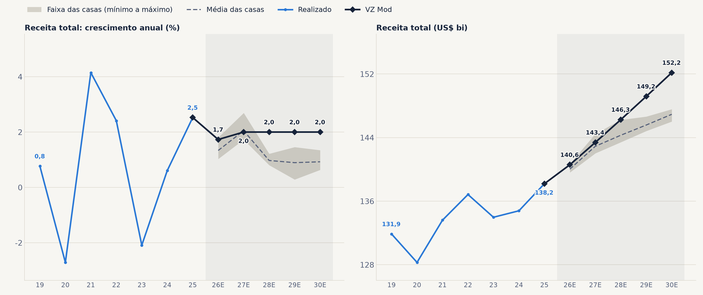
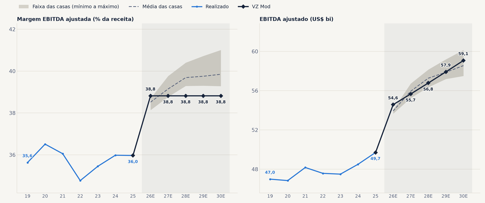
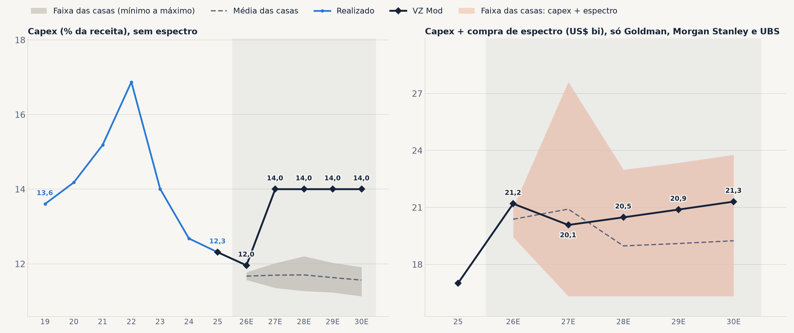
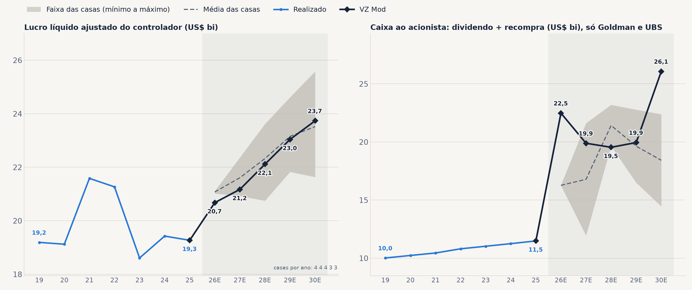
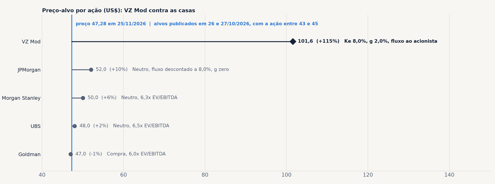

A receita do modelo cresce 2,0% ao ano; as casas caem para perto de 1% de 2028E em diante, e o modelo fica 3,6% acima da média em 2030E

Fonte: 10-K e material de RI da Verizon; VZ Mod de 26/11/2026. Casas: Goldman Sachs, Morgan Stanley, UBS e JPMorgan, estimativas de 26 e 27/10/2026.
2 · EBITDA E MARGEM
O EBITDA do modelo fica dentro da faixa das casas, mas com a margem parada em 38,8%; nas casas ela sobe para 39,3% a 41,0% em 2030E

Fonte: material de RI da Verizon; VZ Mod de 26/11/2026. Casas: Goldman Sachs, Morgan Stanley, UBS e JPMorgan, estimativas de 26 e 27/10/2026.
3 · CAPEX E ESPECTRO
O capex de 14,0% da receita fica 2 a 3 p.p. acima das casas; somada a compra de espectro que elas projetam, o modelo cai no meio da faixa

Fonte: 10-K e 10-Q da Verizon; VZ Mod de 26/11/2026. Casas: Goldman Sachs, Morgan Stanley, UBS e JPMorgan, estimativas de 26 e 27/10/2026. O painel da direita não tem o JPMorgan, que não abre o espectro por ano.
4 · LUCRO E CAIXA AO ACIONISTA
Lucro dentro da faixa das casas de 2027E em diante; o caixa ao acionista do modelo fica acima em 2026E e 2030E

Fonte: material de RI da Verizon; VZ Mod de 26/11/2026. Casas: Goldman Sachs, Morgan Stanley, UBS e JPMorgan, estimativas de 26 e 27/10/2026. Caixa ao acionista só com Goldman Sachs e UBS, as duas que abrem dividendo e recompra até 2030E.
5 · RESUMO: MODELO CONTRA AS CASAS
A operação do modelo bate com a das casas; os desvios são receita e caixa ao acionista em 2030E, margem e capex
US$ bi, salvo indicação
Modelo 2027E
Casas 2027E
Modelo 2030E
Casas 2030E
Receita
143,4
142,0 a 144,5
152,2
146,0 a 147,6
Crescimento da receita (%)
2,0
1,7 a 2,7
2,0
0,6 a 1,3
EBITDA ajustado
55,7
55,2 a 56,7
59,1
57,5 a 60,1
Margem EBITDA (%)
38,8
38,8 a 39,8
38,8
39,3 a 41,0
Capex sem espectro (% da receita)
14,0
11,4 a 12,0
14,0
11,1 a 11,9
Capex + espectro
20,1
16,3 a 27,6
21,3
16,3 a 23,8
Lucro ajustado do controlador
21,2
20,9 a 22,4
23,7
21,6 a 25,6
Caixa ao acionista
19,9
11,9 a 21,6
26,1
14,5 a 22,4
Laranja: modelo abaixo da faixa das casas. Azul: acima. Escuro: dentro.
Fonte: VZ Mod de 26/11/2026 e estimativas de Goldman Sachs, Morgan Stanley, UBS e JPMorgan de 26 e 27/10/2026. Capex + espectro: três casas, sem o JPMorgan. Caixa ao acionista: Goldman Sachs e UBS. Lucro de 2030E: três casas.
6 · PREÇO-ALVO
Com a mesma operação, o alvo do modelo é o dobro do das casas: US$ 101,6 contra 47 a 52; a diferença é a taxa e a perpetuidade

Fonte: VZ Mod de 26/11/2026; relatórios de Goldman Sachs, UBS, Morgan Stanley e JPMorgan de 26 e 27/10/2026. Preço de fechamento de 25/11/2026.